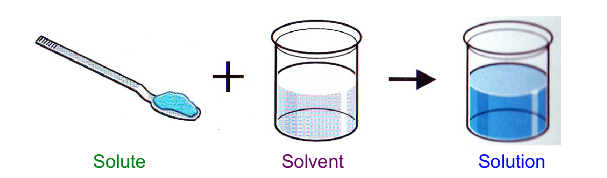

A solute is a minor component in a solution, dissolved in the solvent.
Solutions are a mixture of two or more substances that are identical throughout. (Homogeneous). Some solutions are physically separated. They are composed of solutes and solvents.
Solubility: the amount of solute that dissolves in a certain amount of a solvent at a given temperature and pressure to produce a saturated solution
Factors that affect solubility: Temperature, Shaking, Particle Size.
Solutes are the substance which is added to the solvent to form a solution. Solutes are usually smaller than the solvent.
Solvents are able to dissolve other substances
When solutes and solvents are mixed, we get a solution.
Gaseous solutions – air = Oxygen + Nitrogen
Liquid solutions – drinks = mix + water
Solid solutions – alloys = steel, brass, etc.
Solute + Solvent = Solution

Previous Page